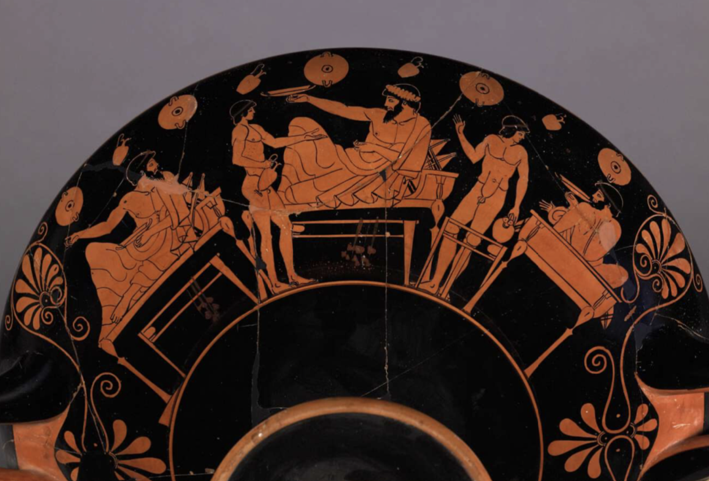
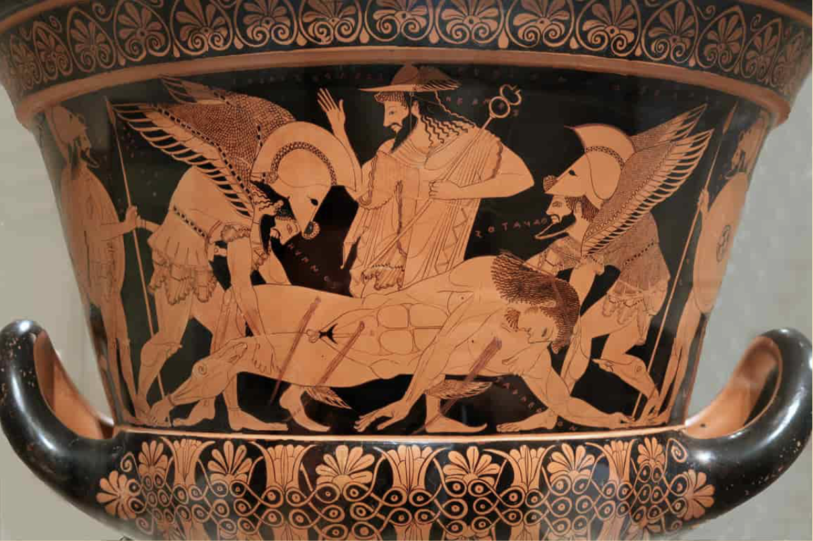
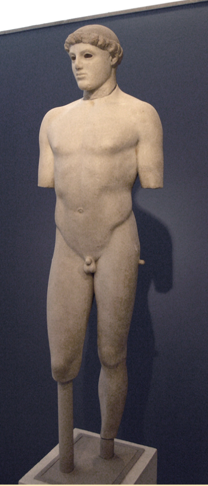
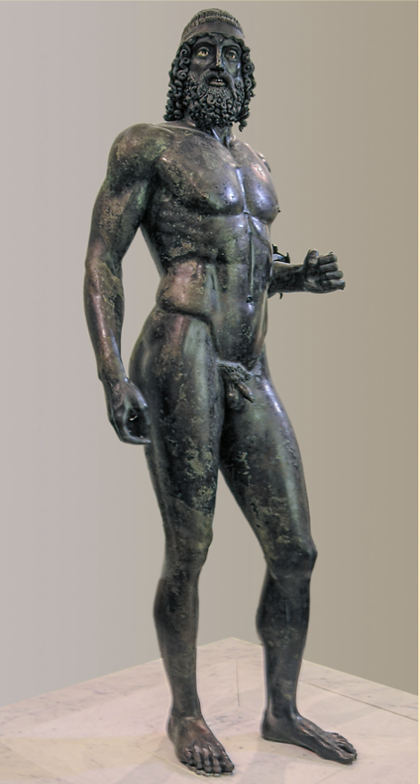
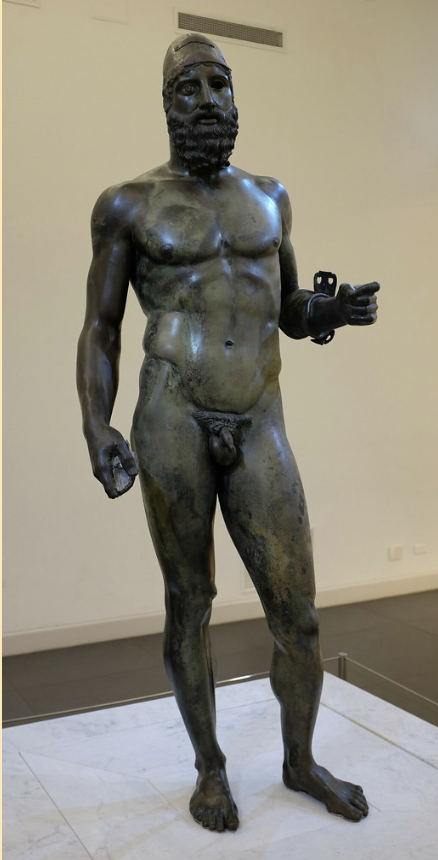
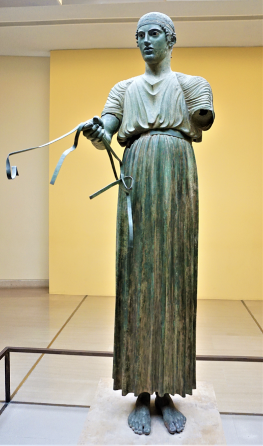
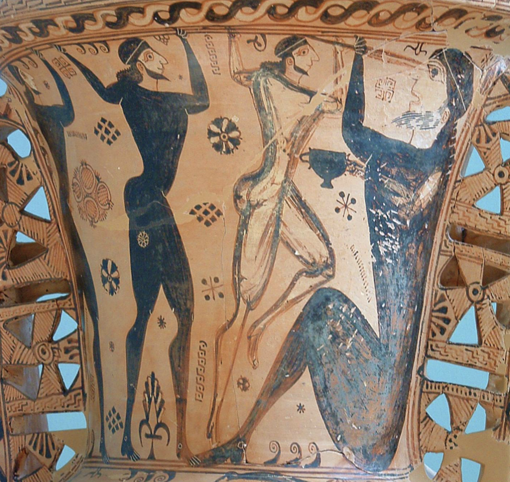

The Red figure technique was created and led to many innovations. Proportions of the figures became more natural, and they were able to depict movement and torsion of the body, and because of the black background they were able to convey a greater sense of depth. This technique was Invented by the Andokides painter, Putting slip in the background so it turns black, Illusions of depth, More accurate representations of the human figure.
510 B.C.
Painted by Euthymides, this Amphora is decorated with three drunk men dancing around. It is a symposium scene that they in. we can see the more advanced rendering of the body, the men are in a three quarter view and posses energy that shows how the body moves.
5th Century B.C.
Wine was a divine gift, from the grape vine of Dionysos. Believed to have health benefits. Make one merry from problems and ailments. Reveal the truthful character of a person, enabling people to improve their character. If improperly used it will drive you mad, ideal of moderation. Mixed with water in different ratios- harmonic balance like music. Emphasis on balance and moderation in greek culture
515 B.C.
Trojan war scene, Sarpedon son of Zeus has died. Sleep (Hypnos) and death (Thanatos) are sent to fetch his body. Palmettes - decorative floral banding above and below the scene. This pot was looted from an Etruscian tomb. MET returned it to Italy.
480 B.C.
Kouros by Kritios 480 BC. Bending the knee creates an unbalancement in the hip. Breaks the bilateral symmetry, body acts in unison. Controposto. Late archaic, severe style, early classical. Newfound naturalism, new sense of self in the wake of the victory over the persians. Believable potential for movement.
 560 B.C.
Two life size bronze nude warriors, that were found in the sea near Raice, southern Italy. They origionally held a shield and spear, and were possibly created to celebrate the Greek victory over Persia. They are an example of the Servere style with lasted from 490 B.C. to 450 B.C. which is characterized by increased interest in bronze and characterization of sculpture.
478 B.C.
Athletic competitions were quite common, and this sculpture was commissioned to celebrate a victory during the Pythian Games, which were held in Delphi to honor Apollo. All the city states came to compete at Delphi, and this statue was given to Apollo to thank him for the victory. There were origionally 4 bronze horses along with the Charioteer.
